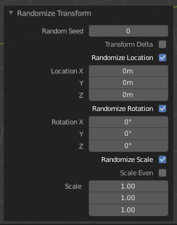

Transform Tools¶
Randomize Transform¶
Reference
| Mode: | Object Mode and Edit Mode |
|---|---|
| Menu: | , |

Randomize transform options.
This tool allows you to apply a randomized transformation.
Object Mode¶
In Object Mode it randomizes the move, rotate, and scale values to an object or multiple objects. When applied on multiple objects, each object gets its own seed value, and will get different transform results from the rest.
Options¶
- Random Seed
- The random seed is an offset to the randomized transformation. A different seed will produce a new result.
- Transform Delta
- Randomize Delta Transform values instead of regular transform.
- Randomize Location
- Randomize Location values.
- Location
- The maximum distances the objects can move along each axis.
- Randomize Rotation
- Randomize rotation values.
- Rotation
- The maximum angle the objects can rotate on each axis.
- Randomize Scale
- Randomize scale values.
- Scale Even
- Use the same scale for each axis.
- Scale
- The maximum scale randomization over each axis.
Edit Mode¶
The Randomize tool in Edit Mode allows you to displace the vertices of a mesh along their normal.
Options¶
- Amount
- Distance of the displacement.
- Uniform
- Adds a random offset of the amount.
- Normal
- Adds a random offset to the displacement normal.
- Random Seed
- The random seed is an offset to the random transformation. A different seed will produce a new result.
Align Objects¶
Reference
| Mode: | Object Mode |
|---|---|
| Menu: |
The Align tool is used to align multiple selected objects so they line up on a specified axis.
Options¶
- High Quality
- Uses more precise math to better determine the locations for the objects. In case of positive or negative bounding box alignment, if one or more of the selected objects have any rotation transformations (or delta rotation transformations), it is recommended to check High Quality so that their bounding box is calculated with precision for all three global axes.
- Align Mode
The Align Mode control will define what part of the objects will be aligned:
- Centers
- The objects centers.
- Positive Sides/Negative Sides
- The positive or negative sides (on the global axes) of their respective bounding boxes.
- Relative To
The Relative To control will let us choose to align the objects to:
- Active
- The active object.
- Selection
- The median point of the selection.
- 3D Cursor
- The current position of the 3D Cursor.
- Scene Origin
- The global origin.
- Align X, Y, Z
- Chooses which axis to align the selected objects on.